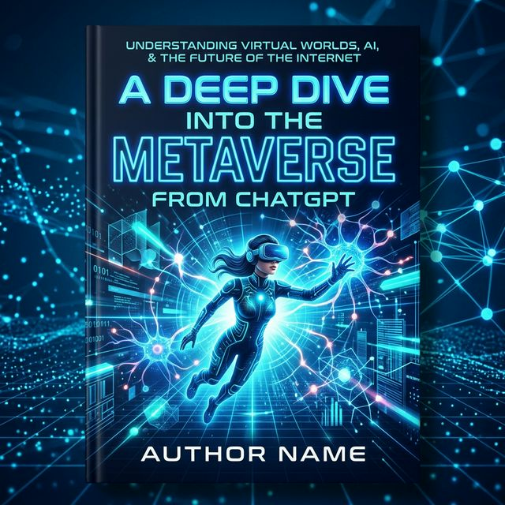
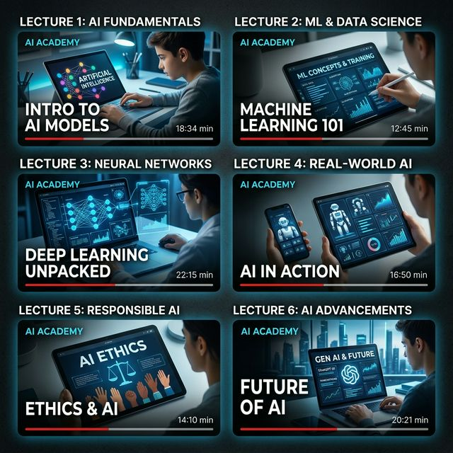

B2G · 공공기관 · 지자체
행정 혁신 & 공공 AX 전환 교육·자문
공무원, 지방의회, 공기업 임직원이 보안 원칙을 지키며 기획·보고·민원 업무를 혁신하도록 지원합니다.
- 생성형 AI 기반 정책 기획서·보도자료·보고서 고도화
- 공공기관 AX 리스크 관리 및 조직 도입 전략 자문
- 지자체 대규모 시민 AI 양성 과정(초·중·고급) 운영
천지인에이아이 대표 정우진(구름빵)은 공공기관·지자체·기업 현장에 즉시 적용 가능한 생성형 AI 교육, 프롬프트 엔지니어링, RAG 챗봇 및 AX 전환 컨설팅을 제공합니다.
단순한 기능 소개가 아닌, 현업 보고서·기획서·행정 프로세스와 직결되는 실전 커리큘럼을 설계합니다.
공무원, 지방의회, 공기업 임직원이 보안 원칙을 지키며 기획·보고·민원 업무를 혁신하도록 지원합니다.
경영진의 AI 의사결정 프레임워크부터 실무자의 프롬프트 엔지니어링·RAG 챗봇 구축까지 원스톱으로 다룹니다.
교수법 혁신, 교직원 행정 효율화, 중·고등학생 및 학부모 대상 AI 리터러시까지 눈높이에 맞춰 강연합니다.
교육 기획부터 대규모 운영, 공기업 AX 전략 자문, 실제 웹·AI 시스템 구축까지 직접 수행했습니다.
“단순히 챗GPT 기능을 나열하는 강의가 아니라, 실제 공무원들이 작성하는 보고서와 행정 시나리오를 현장에서 바로 실습해 주어 수강 만족도가 압도적으로 높았습니다.”
“경영진의 시각에서 AI 리스크와 기회 요인을 명확하게 짚어주고, 실무에 바로 쓸 수 있는 프롬프트와 RAG 사례까지 연결해 주어 내부 AX 추진의 전환점이 되었습니다.”
대상과 교육 시간을 선택하면, 정우진 대표의 120+ 기관 출강 데이터를 바탕으로 최적화된 커리큘럼 초안과 유사 출강 레퍼런스를 즉시 제안합니다.
메인에서는 핵심 대표작만 간결하게 확인하고, 전체 기록은 전용 아카이브에서 탐색할 수 있습니다.
생성형 AI를 업무 무기로 바꾸는 체계적 프롬프트 엔지니어링 실전 지침서.

ChatGPT와 메타버스의 미래를 110문 110답으로 탐구한 영문 전문서 (2023.02).
루이스 헤이·모나리자 슐츠 공저. AI 시대 인간의 내면과 회복탄력성을 다룬 번역서.
보고서·기획서 품질을 즉시 높이는 구조화 프롬프트 설계 노하우.
도구 도입을 넘어 조직 프로세스를 혁신하는 현실적인 실행 로드맵.

공공 조례·사내 문서 기반 검색증강생성(RAG) 챗봇 실전 구축 데모.
• 한국장학재단 감사위원회 자문위원 (2026~)
• 프라임디지털커뮤니케이션 대표 (2022~)
• 한국면접관협회 회원·면접관 (2022~)
• 울산정보산업진흥원 팀장 (이노베이션스쿨 총괄)
• 울산연구원 팀장 (열린시민대학 총괄)
• 울산광역시청 교육보좌관 (시장 교육보좌)
• 울산대 경영학과 박사과정 수료
• 울산대 정책대학원 공공정책 석사 (8년 외래강사)
• 미시간주립대(MSU) 텔레커뮤니케이션 학사
공공기관·기업 내부 결재에 바로 첨부하실 수 있도록 정우진 대표의 공식 이력, 120+ 출강 실적, 대표 커리큘럼을 한눈에 정리한 소개서를 제공합니다.
스마트폰 디지털 명함 열기